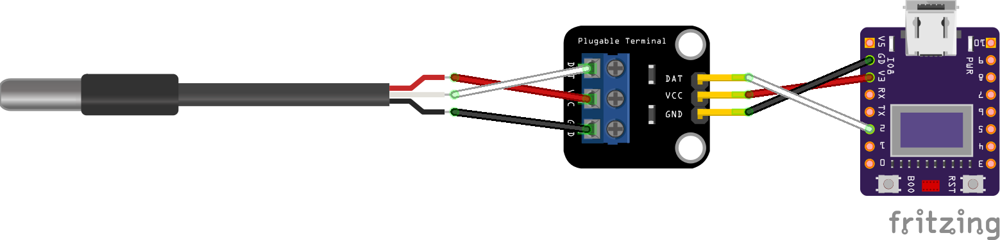
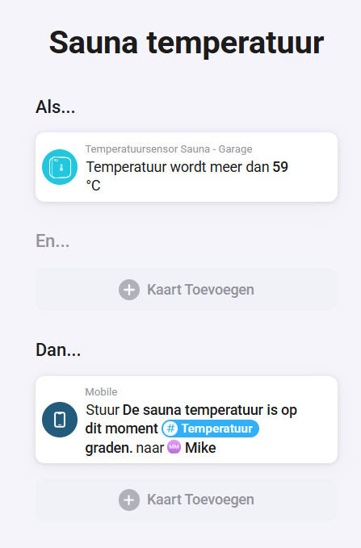
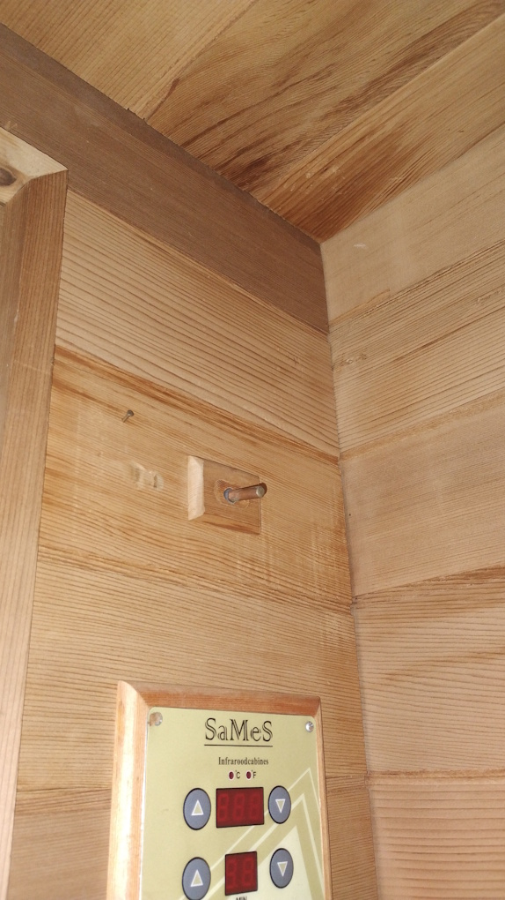

Sommige temperaturen wil je niet alleen af en toe controleren, maar gewoon automatisch in je slimme huis beschikbaar hebben. Denk aan de temperatuur van water in een vijver of zwembad, de warmte van een jacuzzi of het verloop van de temperatuur in een sauna.
In dit project bouw je een compacte temperatuursensor met een ESP32-C3, een DS18B20-temperatuursensor en een klein 72x40 OLED-scherm. De actuele temperatuur wordt lokaal weergegeven op het scherm en via Homeyduino doorgestuurd naar Homey als measure_temperature.
Wat ga je bouwen?
Je bouwt een slimme temperatuursensor die zelfstandig verbinding maakt met WiFi, de DS18B20 uitleest, de temperatuur op het OLED-scherm toont en de meetwaarde naar Homey publiceert.
- Lokale temperatuurweergave → het OLED-scherm toont de actuele temperatuur en een korte WiFi-status.
- Homeyduino-integratie → Homey krijgt de temperatuur als meetwaarde binnen, zodat je deze in flows kunt gebruiken.
Het resultaat is een kleine, praktische sensorunit die niet alleen meet, maar ook meteen bruikbaar wordt binnen je automatiseringen.
Benodigdheden
- ESP32-C3 board met onboard 72x40 OLED-scherm
- DS18B20 temperatuursensor
- Weerstand voor de DS18B20-datalijn, afhankelijk van je gebruikte sensoruitvoering
- USB-kabel en voeding voor de ESP32-C3
- Arduino IDE met de benodigde bibliotheken: Homeyduino, OneWire, DallasTemperature en U8g2
Handige links bij dit project
Dit zijn producten die aansluiten op de benodigdheden in dit artikel.
Stap-voor-stap uitleg
1. Sluit de DS18B20 aan op de ESP32-C3
In de code wordt de datapin van de DS18B20 ingesteld op GPIO 2. Het OLED-scherm gebruikt I2C via SDA op GPIO 5 en SCL op GPIO 6. Controleer altijd of jouw specifieke board dezelfde pinnen gebruikt.
- Data → GPIO 2
- VIN → 3V
- GND → GD

2. Installeer de benodigde bibliotheken
Voor deze sketch gebruik je WiFi, Homeyduino, Wire, OneWire, DallasTemperature en U8g2. Installeer de externe bibliotheken via de Library Manager van de Arduino IDE voordat je de code compileert.
3. Plaats de code op de ESP32-C3
Vul eerst je eigen WiFi-gegevens in bij WIFI_SSID en WIFI_PASSWORD. Pas eventueel ook de apparaatnaam aan, zodat je in Homey meteen ziet welke sensor je toevoegt.
// ========================================================
// ESP32-C3 DS18B20 + OLED + Homeyduino
// Temperatuursensor met onboard 72x40 OLED-scherm
// ========================================================
#include <WiFi.h>
#include <Homey.h>
#include <Wire.h>
#include <OneWire.h>
#include <DallasTemperature.h>
#include <U8g2lib.h>
// ========================================================
// Debug instellingen
// ========================================================
#define DEBUG 1
#if DEBUG
#define DBG_PRINT(x) Serial.print(x)
#define DBG_PRINTLN(x) Serial.println(x)
#else
#define DBG_PRINT(x)
#define DBG_PRINTLN(x)
#endif
// ========================================================
// Configuratie
// ========================================================
namespace Config {
constexpr const char* WIFI_SSID = "SSID";
constexpr const char* WIFI_PASSWORD = "PASSWORD";
constexpr const char* HOMEY_DEVICE_NAME = "Temperatuursensor Sauna";
constexpr const char* HOMEY_DEVICE_CLASS = "sensor";
// DS18B20
constexpr uint8_t TEMP_SENSOR_PIN = 2;
// OLED I2C-pinnen
constexpr uint8_t OLED_SDA = 5;
constexpr uint8_t OLED_SCL = 6;
// Timing
constexpr unsigned long SENSOR_READ_INTERVAL_MS = 5000;
constexpr unsigned long HOMEY_HEARTBEAT_INTERVAL_MS = 60000;
constexpr unsigned long WIFI_CHECK_INTERVAL_MS = 15000;
constexpr unsigned long WIFI_CONNECT_TIMEOUT_MS = 30000;
// Sensorfilter
constexpr float MIN_VALID_TEMP_C = -40.0;
constexpr float MAX_VALID_TEMP_C = 85.0;
constexpr float MIN_TEMP_CHANGE_TO_PUBLISH = 0.2;
}
// ========================================================
// Globale objecten
// ========================================================
OneWire oneWire(Config::TEMP_SENSOR_PIN);
DallasTemperature tempSensor(&oneWire);
U8G2_SSD1306_72X40_ER_F_HW_I2C display(
U8G2_R0,
U8X8_PIN_NONE,
Config::OLED_SCL,
Config::OLED_SDA
);
// ========================================================
// Status
// ========================================================
namespace State {
float currentTemperature = NAN;
float lastPublishedTemperature = NAN;
bool sensorAvailable = false;
bool homeyReady = false;
unsigned long lastSensorReadAt = 0;
unsigned long lastHomeyHeartbeatAt = 0;
unsigned long lastWifiCheckAt = 0;
}
// ========================================================
// Hulpfuncties
// ========================================================
bool isValidTemperature(float temperature) {
return !isnan(temperature)
&& temperature != DEVICE_DISCONNECTED_C
&& temperature >= Config::MIN_VALID_TEMP_C
&& temperature <= Config::MAX_VALID_TEMP_C;
}
bool hasTemperatureChangedEnough(float newValue, float oldValue) {
if (isnan(oldValue)) return true;
return abs(newValue - oldValue) >= Config::MIN_TEMP_CHANGE_TO_PUBLISH;
}
bool canPublishToHomey() {
return WiFi.status() == WL_CONNECTED && State::homeyReady;
}
// ========================================================
// Display
// ========================================================
void drawDisplay(float temperature, bool sensorAvailable) {
display.clearBuffer();
display.setFont(u8g2_font_5x7_tf);
display.drawStr(0, 7, "Temp");
if (!sensorAvailable || isnan(temperature)) {
display.setFont(u8g2_font_6x10_tf);
display.drawStr(0, 25, "Geen sensor");
} else {
char tempText[8];
snprintf(tempText, sizeof(tempText), "%.1f", temperature);
display.setFont(u8g2_font_logisoso20_tf);
display.drawStr(0, 32, tempText);
display.setFont(u8g2_font_6x10_tf);
display.drawCircle(48, 22, 2);
display.drawStr(52, 31, "C");
}
// Kleine WiFi/Homey status rechtsboven
display.setFont(u8g2_font_4x6_tf);
if (WiFi.status() == WL_CONNECTED) {
display.drawStr(54, 7, "WiFi");
} else {
display.drawStr(50, 7, "NoWiFi");
}
display.sendBuffer();
}
// ========================================================
// WiFi
// ========================================================
void connectToWifi() {
DBG_PRINT("Verbinden met WiFi: ");
DBG_PRINTLN(Config::WIFI_SSID);
WiFi.mode(WIFI_STA);
WiFi.begin(Config::WIFI_SSID, Config::WIFI_PASSWORD);
unsigned long startedAt = millis();
while (WiFi.status() != WL_CONNECTED &&
millis() - startedAt < Config::WIFI_CONNECT_TIMEOUT_MS) {
delay(500);
DBG_PRINT(".");
}
DBG_PRINTLN();
if (WiFi.status() == WL_CONNECTED) {
DBG_PRINTLN("WiFi verbonden.");
DBG_PRINT("IP-adres: ");
DBG_PRINTLN(WiFi.localIP());
} else {
DBG_PRINTLN("WiFi verbinden mislukt.");
}
}
void maintainWifi() {
unsigned long now = millis();
if (now - State::lastWifiCheckAt < Config::WIFI_CHECK_INTERVAL_MS) {
return;
}
State::lastWifiCheckAt = now;
if (WiFi.status() == WL_CONNECTED) {
return;
}
DBG_PRINTLN("WiFi verbinding verloren. Opnieuw verbinden...");
WiFi.disconnect();
WiFi.begin(Config::WIFI_SSID, Config::WIFI_PASSWORD);
}
// ========================================================
// Homey
// ========================================================
void setupHomey() {
if (WiFi.status() != WL_CONNECTED) {
DBG_PRINTLN("Homey setup overgeslagen: geen WiFi.");
return;
}
DBG_PRINTLN("Homeyduino starten...");
Homey.begin(Config::HOMEY_DEVICE_NAME);
Homey.setClass(Config::HOMEY_DEVICE_CLASS);
Homey.addCapability("measure_temperature");
State::homeyReady = true;
DBG_PRINT("Homeyduino actief als: ");
DBG_PRINTLN(Config::HOMEY_DEVICE_NAME);
}
void publishTemperatureToHomey(bool forcePublish = false) {
if (!canPublishToHomey()) {
DBG_PRINTLN("Publiceren naar Homey overgeslagen: Homey/WiFi niet klaar.");
return;
}
if (!State::sensorAvailable || !isValidTemperature(State::currentTemperature)) {
DBG_PRINTLN("Publiceren naar Homey overgeslagen: ongeldige temperatuur.");
return;
}
bool shouldPublish =
forcePublish ||
hasTemperatureChangedEnough(State::currentTemperature, State::lastPublishedTemperature);
if (!shouldPublish) {
return;
}
Homey.setCapabilityValue("measure_temperature", State::currentTemperature);
State::lastPublishedTemperature = State::currentTemperature;
DBG_PRINT("Temperatuur naar Homey gepubliceerd: ");
DBG_PRINT(State::currentTemperature);
DBG_PRINTLN(" C");
}
void maintainHomey() {
if (canPublishToHomey()) {
Homey.loop();
}
unsigned long now = millis();
if (now - State::lastHomeyHeartbeatAt >= Config::HOMEY_HEARTBEAT_INTERVAL_MS) {
State::lastHomeyHeartbeatAt = now;
publishTemperatureToHomey(true);
}
}
// ========================================================
// Temperatuursensor
// ========================================================
void setupTemperatureSensor() {
tempSensor.begin();
int deviceCount = tempSensor.getDeviceCount();
if (deviceCount > 0) {
State::sensorAvailable = true;
DBG_PRINT("DS18B20 gevonden. Aantal sensoren: ");
DBG_PRINTLN(deviceCount);
} else {
State::sensorAvailable = false;
DBG_PRINTLN("Geen DS18B20 sensor gevonden.");
}
}
void readTemperatureSensor() {
unsigned long now = millis();
if (now - State::lastSensorReadAt < Config::SENSOR_READ_INTERVAL_MS) {
return;
}
State::lastSensorReadAt = now;
tempSensor.requestTemperatures();
float measuredTemperature = tempSensor.getTempCByIndex(0);
if (!isValidTemperature(measuredTemperature)) {
State::sensorAvailable = false;
State::currentTemperature = NAN;
DBG_PRINTLN("Ongeldige temperatuurmeting of sensor losgekoppeld.");
drawDisplay(State::currentTemperature, State::sensorAvailable);
return;
}
State::sensorAvailable = true;
State::currentTemperature = measuredTemperature;
DBG_PRINT("Gemeten temperatuur: ");
DBG_PRINT(State::currentTemperature);
DBG_PRINTLN(" C");
drawDisplay(State::currentTemperature, State::sensorAvailable);
publishTemperatureToHomey(false);
}
// ========================================================
// Display setup
// ========================================================
void setupDisplay() {
Wire.begin(Config::OLED_SDA, Config::OLED_SCL);
display.begin();
display.setContrast(180);
drawDisplay(NAN, false);
DBG_PRINTLN("OLED display gestart.");
}
// ========================================================
// Setup
// ========================================================
void setup() {
Serial.begin(115200);
delay(500);
DBG_PRINT("Start ");
DBG_PRINTLN(Config::HOMEY_DEVICE_NAME);
setupDisplay();
setupTemperatureSensor();
connectToWifi();
setupHomey();
readTemperatureSensor();
publishTemperatureToHomey(true);
}
// ========================================================
// Loop
// ========================================================
void loop() {
maintainWifi();
maintainHomey();
readTemperatureSensor();
}4. Controleer de seriële monitor en het OLED-scherm
Na het uploaden start de ESP32-C3 op, zoekt de DS18B20, verbindt met WiFi en initialiseert Homeyduino. In de seriële monitor zie je of de sensor gevonden is en welk IP-adres het board krijgt. Op het OLED-scherm verschijnt de actuele temperatuur of de melding dat er geen sensor beschikbaar is.
5. Voeg de sensor toe in Homey
Zodra Homeyduino actief is, kun je het apparaat in Homey toevoegen. De sensor meldt zich met de ingestelde apparaatnaam en gebruikt de capability measure_temperature.

Integratie met Homey
De sketch publiceert de temperatuur naar Homey wanneer de waarde voldoende verandert of wanneer de heartbeat wordt uitgevoerd. Daardoor blijft de waarde actueel zonder dat Homey bij iedere kleine schommeling onnodig wordt bijgewerkt.
Voorbeelden van toepassingen zijn:
- Een melding wanneer de jacuzzi of sauna een ingestelde temperatuur bereikt.
- Een flow die de watertemperatuur van een vijver of zwembad in de gaten houdt.
- Een dashboardwaarde waarmee je snel ziet hoe warm een ruimte, waterpartij of buitenopstelling is.

Praktisch gebruik
De DS18B20 is vooral interessant wanneer je temperatuur op een specifieke plek wilt meten en die waarde niet alleen lokaal, maar ook in Homey beschikbaar wilt hebben. Bij gebruik rond water, buiten of in vochtige omgevingen is de behuizing belangrijk: zorg dat de elektronica droog blijft en dat alleen een daarvoor geschikte sensoruitvoering in contact komt met vocht of water.

Aandachtspunten
- Controleer of jouw ESP32-C3 board dezelfde OLED-pinnen gebruikt als in deze sketch.
- Gebruik bij vijver, zwembad of jacuzzi alleen een sensoruitvoering en behuizing die geschikt zijn voor de omstandigheden waarin je meet.
- De code accepteert temperaturen tussen -40 en 85 graden Celsius; waarden daarbuiten worden als ongeldig behandeld.
Conclusie
Met deze DIY-temperatuursensor voeg je een praktische meetwaarde toe aan je slimme huis. Het OLED-scherm maakt de sensor zelfstandig afleesbaar, terwijl Homeyduino ervoor zorgt dat de temperatuur ook beschikbaar is voor flows. Daarmee is dit een mooi project voor situaties waarin je temperatuur slimmer wilt volgen, zoals bij een vijver, zwembad, jacuzzi, sauna of andere plek waar temperatuur echt iets zegt.